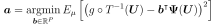

LARS¶
-
class
LARS(*args)¶ Least Angle Regression.
- Available constructors:
- LARS()
See also
Notes
LARS inherits from
BasisSequenceFactory.If the size
 of the PC basis is of similar size to
of the PC basis is of similar size to  , or even
possibly significantly larger than , then the following ordinary least
squares problem is ill-posed:
, or even
possibly significantly larger than , then the following ordinary least
squares problem is ill-posed:
The sparse least squares approaches may be employed instead. Eventually a sparse PC representation is obtained, that is an approximation which only contains a small number of active basis functions.
This class is not usable as is because it has sense only whithin the
FunctionalChaosAlgorithm.Methods
build(x, y, psi, indices)getClassName()Accessor to the object’s name. getId()Accessor to the object’s id. getMaximumRelativeConvergence()getName()Accessor to the object’s name. getShadowedId()Accessor to the object’s shadowed id. getVerbose()getVisibility()Accessor to the object’s visibility state. hasName()Test if the object is named. hasVisibleName()Test if the object has a distinguishable name. setMaximumRelativeConvergence(coefficientsPaths)setName(name)Accessor to the object’s name. setShadowedId(id)Accessor to the object’s shadowed id. setVerbose(verbose)setVisibility(visible)Accessor to the object’s visibility state. -
__init__(*args)¶ x.__init__(…) initializes x; see help(type(x)) for signature
-
getClassName()¶ Accessor to the object’s name.
Returns: class_name : str
The object class name (object.__class__.__name__).
-
getId()¶ Accessor to the object’s id.
Returns: id : int
Internal unique identifier.
-
getName()¶ Accessor to the object’s name.
Returns: name : str
The name of the object.
-
getShadowedId()¶ Accessor to the object’s shadowed id.
Returns: id : int
Internal unique identifier.
-
getVisibility()¶ Accessor to the object’s visibility state.
Returns: visible : bool
Visibility flag.
-
hasName()¶ Test if the object is named.
Returns: hasName : bool
True if the name is not empty.
-
hasVisibleName()¶ Test if the object has a distinguishable name.
Returns: hasVisibleName : bool
True if the name is not empty and not the default one.
-
setName(name)¶ Accessor to the object’s name.
Parameters: name : str
The name of the object.
-
setShadowedId(id)¶ Accessor to the object’s shadowed id.
Parameters: id : int
Internal unique identifier.
-
setVisibility(visible)¶ Accessor to the object’s visibility state.
Parameters: visible : bool
Visibility flag.